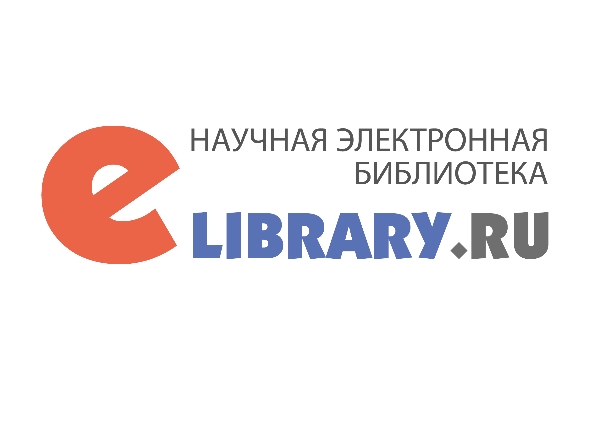
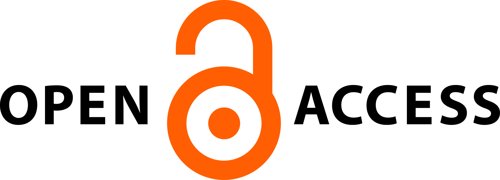

ISSN **-***-** (Online)
Познание — ключ к новым
горизонтам
Организационный взнос - 0₽
«Интеллектуалы»
научный интернет-журнал
гуманитарных и социальных наук.
Форма периодического распространения
Сетевое издание.
Язык
русский, английский.
Территория распространения
Российская Федерация, зарубежные страны.
Периодичность
12 выпусков в год.
Журнал издается с 2025 года.
Статьи журнала размещаются в ООО «Научная электронная библиотека» на платформе eLIBRARY.RU в открытом доступе для пользователей. Все статьи журнала проходят обязательное рецензирование.

